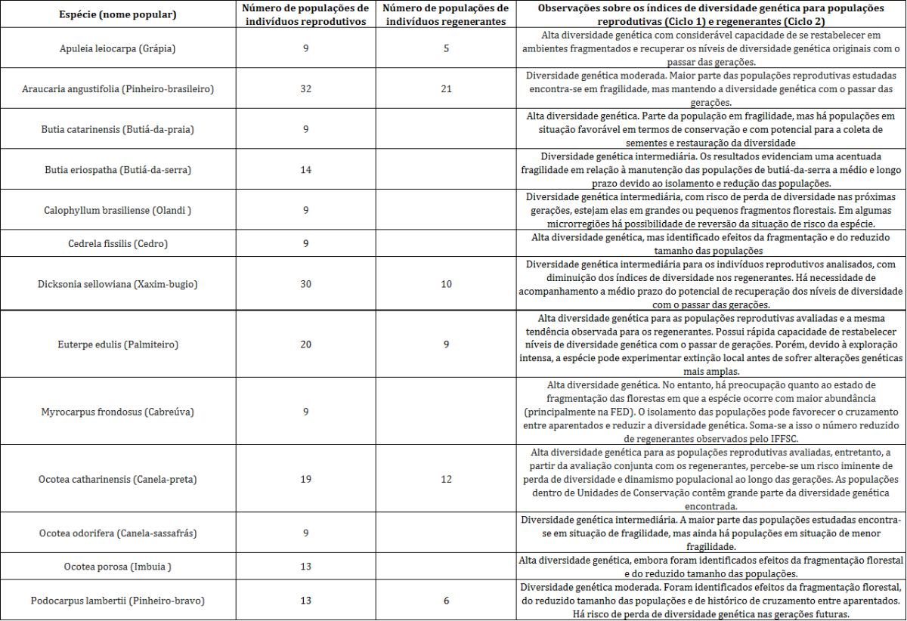

Translated from the Portuguese original. Publication titles, citations and names are kept in their original language.
MonitoraSC carries out a continuous inventory of the forests of Santa Catarina to provide up-to-date information on the conservation/degradation status of the state's forests every 5 years.
Cycle 1 began in 2007 with the installation of the sample plots and the first measurements.
See Cycle 1 (2007 to 2011) for more on the results of this cycle.
Cycle 2 began in 2014 with the return to the Cycle 1 sample plots for the second measurement.
See Cycle 2 (2014 to 2019) for more on the results of this cycle.

Cycle 1 (2007–2011)
Cycle 1
(2007 a 2011)
Inventory of forest remnants
Number of species observed
In total, including the floristic and epiphyte surveys, 2,175 species of vascular plants from 179 families and 797 genera were recorded: 19 lycophytes, 258 ferns, three gymnosperms and 1,895 angiosperms. Of these, 1,352 species were recorded by the additional floristic survey (walks around the plots).
FlorestaSC recorded 823 species in the cluster plots, considering the tree-shrub layer (DBH ≥ 10 cm), understorey and natural regeneration (DBH < 10 cm). They belong to 104 plant families.

Richness of tree and shrub species found in the main vegetation types of SC.
For more information, see the FlorestaSC book chapter on the Santa Catarina flora. (See the chapter)
Most abundant tree and shrub species
After the tree fern xaxim-bugio, canela-guaicá was the most abundant tree species in the forests of SC.
Ocotea puberula, commonly known as canela-guaicá, was the most abundant tree species in Santa Catarina. It is common in all of the state's forest types, mainly in secondary forests, where its growth is favoured.
Diameter distribution (cm) of canela-guaicá (Ocotea puberula).


Fruits of canela-guaicá.
The ten most abundant species in the forests sampled by FlorestaSC in Santa Catarina (n = 440; DBH ≥ 10 cm).
Most abundant species by forest type in Santa Catarina (n = 440; DBH ≥ 10 cm).
The tree ferns Dicksonia sellowiana (xaxim-bugio) and Alsophila setosa (samambaia-açu) deserve mention: both were more abundant than the tree species above – the first with 6,074 and the second with 3,000 individuals sampled in the FlorestaSC clusters.
Species that were once highly abundant, such as Ocotea catharinensis in the Dense Ombrophilous Forest and Apuleia leiocarpa in the Seasonal Deciduous Forest, were not among the most abundant, probably because of intensive logging in Santa Catarina. These species are listed as rare and threatened.
List of threatened flora of SC (Consema Resolution No. 51/2014)

xaxim-bugio (Dicksonia sellowiana): the most abundant tree fern

canela-preta (Ocotea catharinensis): Critically Endangered

juçara palm (Euterpe edulis): an abundant species in the Dense Ombrophilous Forest
For more information, see the IFFSC book chapter on the structure of forest remnants in SC. (See the chapter)
Trees in early successional stages
Araucaria was the most abundant species in early stages in SC.
Trees in these successional stages are those found outside the areas classified as forest in the maps available when the IFFSC began in 2007 (SAR, 2005/2008; PPMA, 2008).
220 tree species were identified in early-stage areas. Paraná pine (Araucaria angustifolia), bracatinga (Mimosa scabrella) and yerba mate (Ilex paraguariensis) were the most abundant, together accounting for 15% of all individuals in these areas.
bracatinga (Mimosa scabrella) with Paraná pine (Araucaria angustifolia) in the background
For more information, see the FlorestaSC book chapter on areas outside forests (early-stage vegetation and other land uses). (See the chapter)
Exotic species
Across all FlorestaSC surveys (forest plots, plots outside forest and floristic walks), 102 exotic species were recorded.
The genera Eucalyptus, Pinus and Citrus stand out for their abundance.
About 45% of the species recorded are herbs. Of the 102 species, only 12 were found in the cluster plots – meaning only these were reliably recorded inside forest remnants. All the others were on edges or on trails leading into the remnants.
In general, exotic species in the clusters had low abundance, except Hovenia dulcis (Japanese raisin tree), which reached considerable values, mainly in the Seasonal Deciduous Forest, ranking among the 15 most important species of this forest type. One cluster in the Seasonal Deciduous Forest held 106 individuals of Japanese raisin tree.
For more information, see the FlorestaSC book chapter on exotic species. (See the chapter)
Hovenia dulcis (Japanese raisin tree) and its regeneration inside the forest.
Photo: Paulo Schwirkowski, Flora Digital.
Epiphyte richness
Vascular epiphytes account for 23% of all species recorded by FlorestaSC.
491 epiphyte species were recorded: 126 ferns and lycophytes and 365 angiosperms. The richest families were Orchidaceae (180 species), Bromeliaceae (69) and Polypodiaceae (43). Eight species are threatened or rare. Richness was highest in northern SC (Itajaí-açu, Cubatão and Itapocu river basins), suggesting the region is a potential hotspot for vascular epiphytes. This high diversity is linked to high air humidity and good forest conservation.
Two new species were described from these collections: a bromeliad and an orchid. The bromeliad was named Vriesea rubens J.Gomes-da-Silva & A.F.Costa and is endemic to Santa Catarina, i.e. it occurs only in this state. It was described from a collection in Orleans and later collected in São Martinho and Antônio Carlos. Its name refers to the red colour of its bracts.
The orchid was named Campylocentrum schlechterianum E.Pessoa & M.Alves, honouring Rudolf Schlechter, a German botanist who described several Campylocentrum species in the early 20th century. It has only been collected in São Martinho (SC) and Barra do Turvo (SP).
Discoveries:
New species for science!
Bromeliad: Vriesea rubens
Orchid: Campylocentrum schlechterianum
For more information, see the FlorestaSC book chapter on the epiphyte survey. (See the chapter)
Fern and lycophyte richness
FlorestaSC recorded 324 species of ferns and lycophytes, and Dicksonia sellowiana was the most abundant tree fern.
Commonly known as maidenhair ferns, tree ferns or pteridophytes, the lycophytes and ferns are highly diverse in Santa Catarina. They can grow on other plants – like the epiphytes above – on rocks, on the ground or even in water. 442 species are known for SC; FlorestaSC recorded 324, or 73% of the state total.
The richest families were Polypodiaceae (48), Pteridaceae (42) and Dryopteridaceae (38). During the collections, 18 new records were made for the Santa Catarina flora, i.e. species not previously known from SC.
Diversity was highest in the Dense Ombrophilous Forest – 288 species, 128 of them exclusive to this type; 177 species were found in the Mixed Ombrophilous Forest (30 exclusive) and 57 in the Seasonal Deciduous Forest (three exclusive).
The most abundant species in the Mixed Ombrophilous Forest was Dicksonia sellowiana, the xaxim-bugio. In the Dense Ombrophilous Forest, species of Cyathea and Alsophila were also prominent and very common in the understorey.
A stand of Dicksonia sellowiana (xaxim-bugio) in the Mixed Ombrophilous Forest.
For more information, see the papers:
Forest stocks
Forest stocks result from the biological production of organic matter through photosynthesis, which forms forest biomass. Part of this biomass can be turned into timber and non-timber products of economic, social or environmental value, both in the national economy and in the local economies of forest-dependent communities.
The native forests of Santa Catarina are estimated to hold about 309 million m³ of stem wood.
In the forests of SC, the mean stem wood stock of trees with DBH ≥ 10 cm is estimated at 85.5 m³/ha, totalling 309 million m³. Timber stocks were estimated with volume models fitted to trees measured by IFFSC field teams.
SC is estimated to hold about 184 million tonnes of aboveground carbon in its native forests.
These stocks were obtained indirectly, by applying biomass models and conversion factors. The aboveground biomass of live trees was considered.
Total aboveground biomass was estimated at 367 million tonnes and total necromass at ~39 million tonnes. Total aboveground carbon in live trees is 184 million tonnes.
Mean stocks per hectare (± 95% confidence interval) and for the total forest area in each forest type, considering trees with DBH* ≥ 10 cm measured in IFFSC Cycle 1.
*DBH = diameter at breast height, measured 1.30 m above the ground.
Mean stocks per hectare and for the total area were estimated considering all land uses in the sample plots. More information on how the estimates were produced is in this explanatory note.
Estimativas de atributos florestais
Means and confidence intervals (95%) of forest attributes by forest type.
Dense Ombrophilous Forest (FOD), Mixed Ombrophilous Forest (FOM), Seasonal Deciduous Forest (FED)
For more information, see the paper:
Human impacts
Signs of human disturbance were found in 94% of the clusters. Logging was the most frequent impact (80%).
After logging, the most frequent signs were clearing and roads (49%), followed by the presence and/or traces of large animals (37%). Less often, there were signs of non-timber extraction (palm heart and yerba mate; 14%), exotic trees (13%), hunting (7%) and fire (3%).
Notable here are the indiscriminate cutting of juçara palms in the FOD and the conversion of forest to pasture in the FOM. Pasture was the most frequent land use around the clusters.
Forest successional stages
Most forest remnants in Santa Catarina result from secondary (post-disturbance) succession – about 97% of the remnants sampled.
42% of the forests sampled are in an advanced successional stage, 53% in an intermediate stage and 2% in an early stage. About 3% were classed as primary forests because of their high biological and structural diversity.
Early-successional forest.
Intermediate-successional forest.
Advanced-successional forest.
For more information, see the FlorestaSC book chapters on the assessment of forest successional stages. (See the chapters)
Genetic diversity
Overall, the genetic diversity analyses of the 13 species showed an increase in mating between close relatives – technically called inbreeding. Over generations, this reduces genetic variability and, therefore, the ability of individuals to cope with new environmental conditions.
Forest fragmentation, overexploitation and defaunation are the most evident causes of the decline in genetic diversity of the species assessed. Even so, some sites still hold populations with considerable genetic diversity. There, seeds with higher genetic diversity can be collected to produce seedlings.
For more information, see the chapter on the Cycle 1 genetic survey in the FlorestaSC book. (See the chapter)
.
Socio-environmental survey
85% of interviewees said they use some native forest product.
In total 777 people were interviewed in Santa Catarina: 66% men and 34% women, aged 15 to 91; most were over 40.
Interviewees mentioned 379 species in total (328 properly identified); 20% said their family used more than ten species.
General aspects
Among the use categories, food stands out with 1,748 mentions; medicinal use has the largest number of species mentioned; and energy use has the highest share of interviewees using native species for this purpose.
Number of mentions, number of native species reported in use by the 777 interviewees, and percentage of users in each use category.
Most used species
The forest species most used by interviewees in Santa Catarina are araucaria and guabiroba.
Araucaria seeds (pinhão) and guabiroba fruits are notably used as food.
*Cipó-mil-homens was often mentioned for medicinal use, although it is contraindicated.
Timber uses
Firewood and fence posts are the main timber products used by rural interviewees in Santa Catarina.
Of all interviewees, 56% (432) said they use some timber product. About 176 species were mentioned. Of the native flora, 95 species are used for sawn wood, veneer, posts, roundwood and more, and 170 species for energy, mainly firewood. Commercial use was rarely reported, limited to selling firewood (5% of interviewees).
The most often mentioned timber species were angico (Parapiptadenia rigida), tarumã (Vitex megapotamica), jacatirão (Miconia cinnamomifolia), araucaria (Araucaria angustifolia), imbuia (Ocotea porosa) and bracatinga (Mimosa scabrella).
Main timber products used by rural interviewees in Santa Catarina
A licurana log (Hyeronima alchorneoides) from secondary forest management in SC being processed.
Photo: Heitor F. Uller
Non-timber uses
Food stands out among non-timber uses. Pinhão, various fruits and yerba mate are the most used products.
274 species were mentioned with some non-timber use. However, only araucaria (Araucaria angustifolia), for its seeds (pinhão), and yerba mate (Ilex paraguariensis), for its leaves, have economic and social significance. For this reason, they are the only species with reasonably organised supply chains.
Food uses
87 species were mentioned for food use.
Notable are pinhão (27%), guabiroba (Campomanesia xanthocarpa; 24%) and Surinam cherry (Eugenia uniflora; 21%). Also mentioned were cereja (Eugenia involucrata; 16%), araticum (Annona spp.; 15%), yerba mate (Ilex paraguariensis; 11%) and jabuticaba (Plinia peruviana; 10%).
Medicinal uses
Medicinal use of native species was reported by 53% of interviewees.
The most often mentioned species were cipó-mil-homens (Aristolochia triangularis) (24%), espinheira-santa (Maytenus ilicifolia) (16%), pau-amargo (Picrasma crenata) (6%), macela-do-campo (Achyrocline satureioides) (6%) and carqueja (Baccharis spp.) (5%). The widespread medicinal use of cipó-mil-homens in Santa Catarina is a concern, as the plant is considered tumorigenic and abortifacient (Mengue et al., 2001).
Ornamental uses
For ornamental use and handicrafts, the most often mentioned native species were xaxim-bugio (Dicksonia sellowiana) (mainly on the Plateau and in Greater Florianópolis), orchids (mainly in the Itajaí Valley and the West), butiá (mainly in the West and North) and bromeliads (Itajaí Valley and Greater Florianópolis).
Pinhão: a key food for rural communities in SC
Maytenus ilicifolia (espinheira-santa): a tree species prominent in medicinal use
Photo: Juliano Pörsch, Flora Digital
Orchid (Pleurothallis grobyi)
Planted forests
70% of interviewees have planted forest areas, with Eucalyptus the most planted genus (53%).
After Eucalyptus spp., the main planted species are Pinus spp. (24%) and Hovenia dulcis (Japanese raisin tree) (8%), with others in smaller proportions (araucaria, king palm and palm heart). The main product of planted forests is wood for energy (37%) and for sawmills/industry (27%).
The main reason for planting forests given by plantation owners is 'to obtain forest products' (45%), followed by 'green savings' (16%).
Among interviewees without plantations, the main reasons for not planting are small property size (46%) and preference for other activities (10%).
For more information, see the chapter on the Cycle 1 socio-environmental survey in the FlorestaSC book. (See the chapter)
Cycle 2 (2014–2019)
Cycle 2
Inventory of forest remnants
The first field measurement cycle took place from 2007 to 2011, with 480 sample plots surveyed across the state. The second cycle ran from 2014 to 2019, re-measuring 361 plots: 314 in intermediate or advanced successional forests and 47 in early successional forests.
Continuous vegetation surveys in Santa Catarina provide key data on forest dynamics, such as growth, mortality and recruitment rates (new trees entering the forest). This information supports the study of forest ecological processes, sustainable management of forest resources, tracking of carbon uptake by forests, and new forest policies.

Of the 361 re-measured plots, 160 are in the Dense Ombrophilous Forest, 161 in the Mixed Ombrophilous Forest and 40 in the Seasonal Deciduous Forest.
Using repeated measurements over time, one of FlorestaSC's main interests is to estimate net change in variables such as number of trees, basal area and aboveground biomass per hectare.
Net change in number of trees per hectare is the number of trees recruited minus the number that died over a given period.
Net change in basal area is the basal area growth of surviving trees plus the basal area of recruited trees, minus the basal area of trees that died in the same period. The same applies to biomass.
Results
Net change in number of trees per hectare in SC forests is positive over 5 years. This means more trees were recruited into the forests than died.
The average increase in number of trees per hectare over five years was:
- 4.3% in the Dense Ombrophilous Forest (FOD);
- 4.8% in the Mixed Ombrophilous Forest (FOM);
- 7.7% in the Seasonal Deciduous Forest (FED).
Mean net change in number of trees per hectare over 5 years
Net change in basal area in SC forests is positive over 5 years. This means the forests of Santa Catarina are still growing.
The Dense Ombrophilous Forest (FOD) showed an average 6.4% increase in basal area per hectare;
The Mixed Ombrophilous Forest (FOM) showed an average 5.7% increase in basal area per hectare;
The Seasonal Deciduous Forest (FED) showed an average 5.7% increase in basal area per hectare.

Mean net change in basal area per hectare over 5 years
Net change in aboveground biomass in SC forests is positive over 5 years. This means the forests of Santa Catarina are absorbing atmospheric carbon, since about 50% of forest biomass is carbon.
The Dense Ombrophilous Forest (FOD) showed an average 7.7% increase in biomass/carbon stock per hectare;
The Mixed Ombrophilous Forest (FOM) showed an average 5.9% increase in biomass/carbon stock per hectare;
The Seasonal Deciduous Forest (FED) showed an average 6.0% increase in biomass/carbon stock per hectare.

Mean net change in biomass per hectare over 5 years
The difference in number of species per plot between the first and second measurements is positive on average over 5 years. This means that, on average, new species are entering the forests of Santa Catarina.
The Dense Ombrophilous Forest (FOD) gained on average 3 new species per plot;
The Mixed Ombrophilous Forest (FOM) gained on average 2 new species per plot;
The Seasonal Deciduous Forest (FED) gained on average 3 new species per plot.

Difference in species richness between measurement cycles
More detailed results are available in these papers:
Vibrans et al. (2022, in Portuguese) & Vibrans et al. (2022, in English)
Genetic diversity
In Cycle 2, the genetic analysis focused on regenerating individuals of threatened species and species of economic and social importance.
Results for regenerating individuals varied, indicating that the processes maintaining genetic diversity differ among species and may therefore call for different conservation actions. For example, regenerating grápia, juçara palm and Paraná pine showed great potential to maintain the genetic diversity of the adults, unlike regenerating canela-preta – a warning sign of imminent loss of diversity and adaptive potential in this species' populations.
Considering the diversity indices of reproductive and regenerating populations together, the most genetically vulnerable species are Dicksonia sellowiana (xaxim-bugio) and Podocarpus lambertii (pinheiro-bravo).
Based on the results obtained since 2007, the following general conservation measures are suggested: increasing connectivity between forest fragments; using native species in plantations for forest resource use; establishing seed collection areas; conserving the fauna that disperse and pollinate most of the species studied; and strengthening enforcement against illegal exploitation of forest resources.
For almost all species there are populations with high genetic diversity suitable for Seed Collection Areas, which adds value to the remnants and provides quality propagules for restoration, recovery, increased connectivity between remnants, or simply plantations for the use of native forest resources.
Considering the populations sampled within protected areas, protected areas are effective in conserving the species' genetic diversity, especially for Dicksonia sellowiana (xaxim-bugio) and Ocotea catharinensis (canela-preta).
More information on the genetic diversity study is in Chapter 2 (methods) and Chapter 4 (results) of Volume 7.

Page migrated from floresta.sc.gov.br.